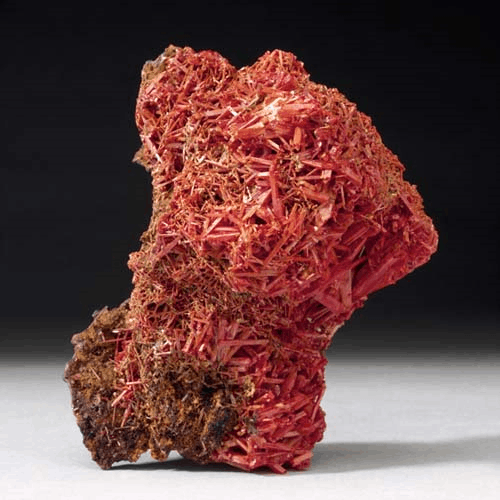
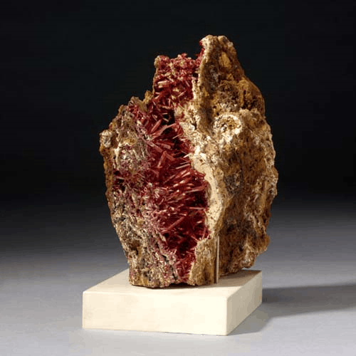

Crocoite - PbCrO4
Chromates



Habit: Orange red to yellow. Prismatic to acicular crystals with nearly square outline, elongated and striated, or short prismatic to pseudo-octahedral; may be highly modified, with terminations commonly hollow or incomplete; typically radial sprays to randomly intergrown aggregates. Adamantine to vitreous luster; transparent to translucent. Yellowish orange streak.
Environment: A secondary mineral found in the oxidized zone of lead deposits, especially those associated with ultrabasic rocks.
Etymology: From the Greek word for saffron, an allusion to its distinctive red-orange color.